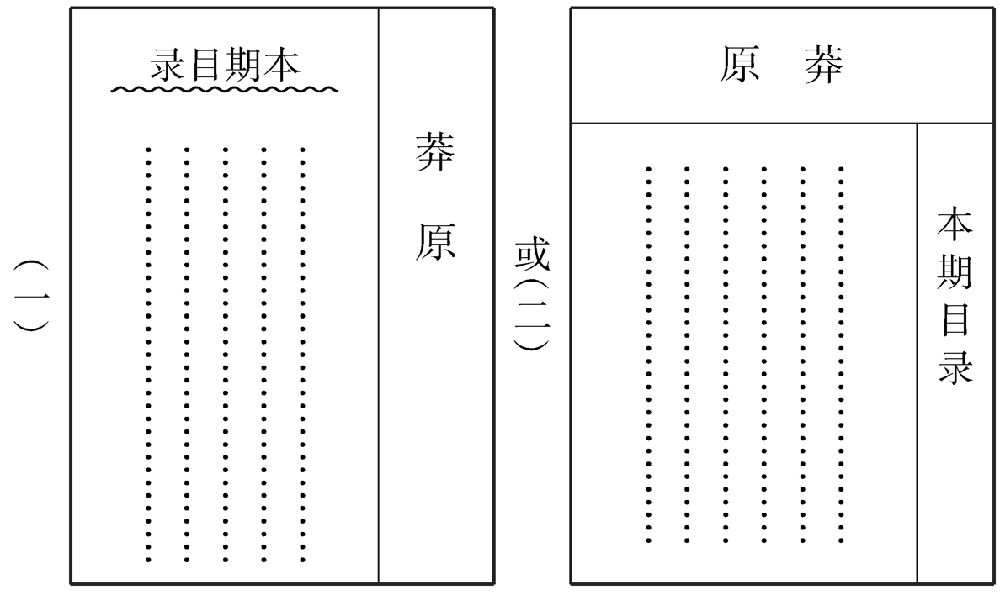
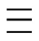
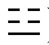
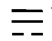
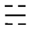
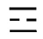
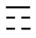
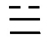

鲁迅师：
先后的收到信和《莽原》，使我在寂寞的空气中，不知不觉的发生微笑。此外还有《猛进》，《孤军》[93]，《语丝》，《现代评论》等，源源而来，关心大局的人居然多起来了！每周得着这些师资，多么快活呀。
这种小周刊，多半总是每版分为三层，第一版上层之首印着刊名，同版下层的末尾印着目录。《莽原》的形式也如此。这不知是否有特别意义，较别的方法佳？但我的意见，以为倘将目录和刊名放在一起，则成为：

这样的一个方块，而将这放在第一版的上层的前头，就免得读者看到第三层，忽然见有一段目录出来，分散了对于该处作品的注意力。否则，将这方块设在中层的中央，倒也颇觉特别。再不然，则刊名仍旧（第一版上层之最前），而目录则请它去坐“交椅”（第八版之末）。这只是我的心理作用觉得这样好，但说不出正当理由来，请参考可也。
《莽原》之文仍多不满于现代，但是范围较《猛进》，《孤军》等之偏重政治者为宽，故甚似《语丝》，其委曲宛转，饶有弦外之音的态度，也较其他周刊为特别，这是先生的特色，无可讳言的。看了第一期，觉得“冥昭”[94]就是先生，此外《棉袍里的世界》颇有些先生的作风在内，但不能决定。余如《槟榔集》的作者想是姓向的那位，也有几分相肖于先生。而全期之中，则先生只有两篇作品。
在《棉袍里的世界》文中，作者揪住了朋友来开始审判，以为取了他“思想”，“友谊”……甚至于“想把我当做一件机器来供你们使用”。我当时十分惭愧，反省，我是否也是“多方面掠夺者”之一？唉，虽则我不敢当是朋友，然而学生“掠夺”先生，那还了得！明目张胆的“掠夺”先生，那还了……得！！！此人心之所以不古也。有志之士，盍起而防御之！？
第二期也许学学做文章，但是仍本粗人做不了细活计的面目，恐怕还是做出来不中用，那时，只请破除情面，向字纸篓里一塞。然而能否做出，也还是一个问题。
“报应”之来，似有甚于做“别人的文章的题目”的。先生，你看第八期的《猛进》上，不是有人说先生“真该割去舌头”[95]么？——虽然是反话。我闻阎王十殿中，有一殿是割舌头的，罪名就是生前说谎，这是假话的处罚。而现在却因为“把国民的丑德都暴露出来”，既承认是“丑德”，则其非假也可知，而仍有“割舌”之罪，这真是人间地狱，这真是人间有甚于地狱了！
考试尚未届期呢，本可抗不交卷的，但考师既要提前，那么现在做了答案，暑假时就可要求免试了——倘不及格，自然甘心补考——答曰：
那房子的屋顶，大体是平平的，暗黑色的，这是和保存国粹一样，带有旧式的建筑法。至于内部，则也可以说是神秘的苦闷的象征。靠南有门，但因隔了一间过道的房子，所以显得暗，左右也不十分光亮，独在前面——北——有一大片玻璃，就好像号筒口。这是什么解释呢？我摆开八卦[96]，熏沐斋戒的占算一下罢。卦曰：世运凌夷，君子道消，逢凶化吉，发言有瘳。解曰：号筒之口，声带之门，因势利导，时然后言。夫人不言，言必有中，此南无阿弥陀佛救苦救难观世音菩萨亲降灵签也。余文尚多，以不在本答案范围之内，均从略。
此外小鬼也有一点“敢问”求答的——但是绝非报复的考试，虽然“复仇乃春秋大义”[97]，然而学生岂敢与先生为仇，而且想复，更兼要考呢，罪过罪过，其实不过聊博一笑耳。问曰：我们教室天花版的中央有点什么？倘答电灯，就连六分也不给，倘俟星期一临时预备夹带然后交卷，那就更该处罚（？）了。其实这题目原甚平常而且熟习，不如探检那么生疏，该不费力的罢。敢请明教可也！
午门之游，归来总带着得胜的微笑，从车上直到校中，以至良久良久；更回想及在下楼和内操场时的泼皮，真是得意极了！人们总是求自我的满足的，何尝计及被困者的为难。其实被困者那天心理测验也施行得够了：命大家起立以占是否多数，再下楼迟延以察是否诚意。然而终竟被“煽动”了。据最新的分数计算法，全对就满分，一半对一半错就相抵消，一分也没有，倘若完全失败，更不待言是等于零。“六十分？”太宽了罢！其实那天何尝是“被逼”而“失败”，归结也还是因为“摇身一变”的法术未臻上乘，否则，变成女先生，就不妨“带队”（我的这话也“岂有此理”，男先生“带队”有什么出奇），或者变成女……，就不妨冲锋突围而出。可是终于“被逼”，这是界限分得太清的缘故罢，还是世俗积习之终于不易破除呢？！
现社会也实在黑暗，女子出来做事，实是处处遇到困难。我不是胆怯，只为想避免些麻烦，所以往往先托人打听。不料知识界的报界也是鬼蜮——它未写明报名地点，即是可疑处——也是如此。这真教猛进的人处处感着多少阻碍和踌躇。“谁叫你生着是女人呢？”这句话，我着实没法解答于老爷们，太太们之前。
小鬼许广平。四月二十五晚。
注 释
[93] 《孤军》 即《孤军周报》。1924年12月创刊，北京法政大学孤军周报社发行。
[94] “冥昭” 鲁迅在《莽原》周刊第一期（1925年4月24日）发表《春末闲谈》（后收入《坟》）的笔名。同期所刊《棉袍里的世界》和《槟榔集》二文，分别为高长虹、向培良作。
[95] “割去舌头” 见于徐炳昶在《猛进》第八期（1925年4月24日）发表的《通讯》：“鲁迅的嘴真该割去舌头，因为他爱张起嘴乱说，把我们国民的丑德都暴露出来了”。
[96] 八卦 《周易》中的八种基本图形：乾（

）、坤（）、震（
）、巽（
）、坎（
）、离（
）、艮（
）、兑（
）。象征天、地、雷、风、水、火、山、泽八种自然现象。古时用以占卜。[97] “复仇乃春秋大义” 《春秋》各传中多次提到复仇的事，如《春秋公羊传》庄公四年：“九世犹可以复仇乎？虽百世可也。”